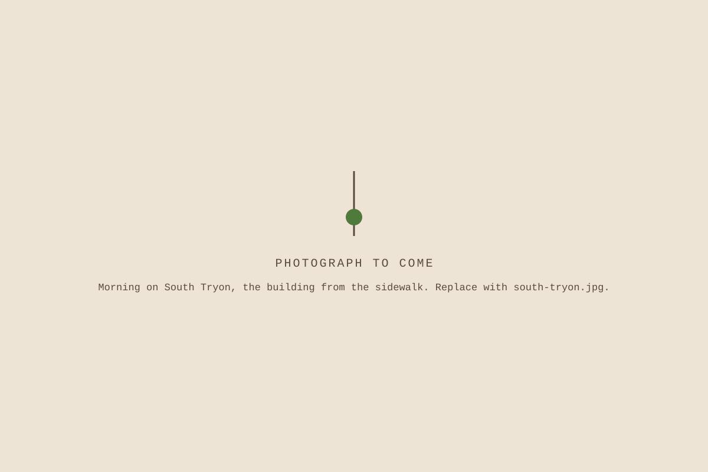

Rooted and the church
The table came first.
rooted grew out of South Tryon Community United Methodist Church and the neighbors of Brookhill Village and Southside.
The church
South Tryon Community Missional United Methodist Church is a congregation at 2516 South Tryon Street, with Brookhill Village and Southside as its nearest neighbors. The building holds worship, Trinity’s Table, and now a roaster.
We did not put the roaster in a back room. It shares the hall where the neighborhood eats, and the smell of a roast day reaches the sanctuary.

Trinity’s Table
Trinity’s Table is the church’s shared meal. Neighbors cook and neighbors eat, at the same table. rooted was imagined there, and the way the table works is the way the roastery works. Nobody at it is somebody else’s project.
Why a church roasts coffee
Because we read a gospel where good news gets concrete. Wages get paid. Bread gets broken. People get names and work worth doing. A roastery is a way to say all of that out loud on South Tryon Street, every week, at a fair counter.
There is no commercial version of rooted and no faith version. This is the one version. A workforce funder and a Sunday School class read this same page, and both are being addressed.
The coffee has to be good on its own terms. Nobody needs our theology to enjoy the cup, and nobody who shares it has to squint to find it.
The money, plainly
Year one, the coffee pays part of the wages. Not all of them. The rest comes from grants and from gifts given through the church. The plan is for anchor accounts and subscriptions to carry more of the payroll each year, in that order.
Two things are deliberately unsettled. rooted’s legal structure is still being decided, which is why no entity name appears in the footer of this site. And we do not publish impact numbers, because we have not decided what kind of counting honors the people it would count.
What rooted is to the church on paper belongs to that same open decision. What it is on the ground is not open: same building, same table, same people, and the church named at the bottom of every page.